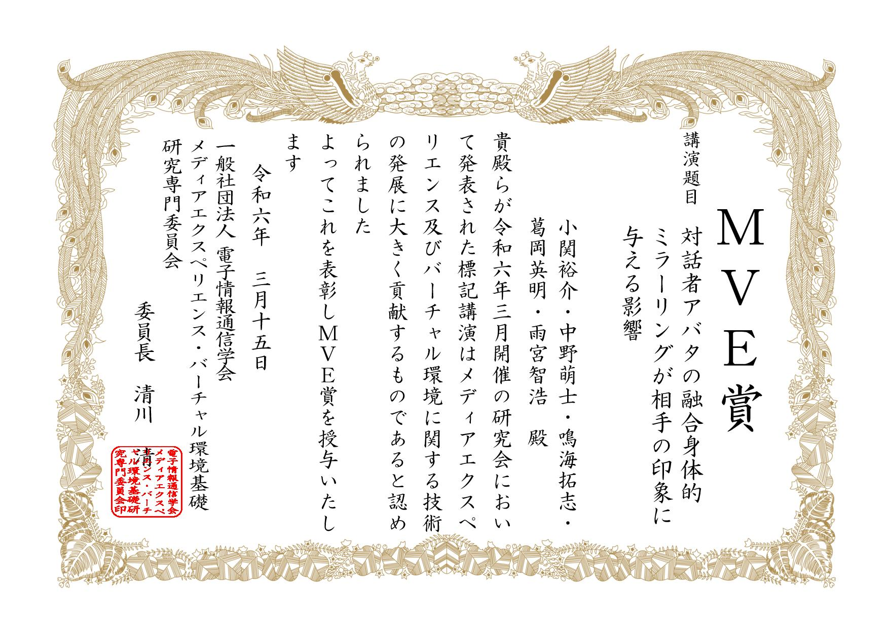
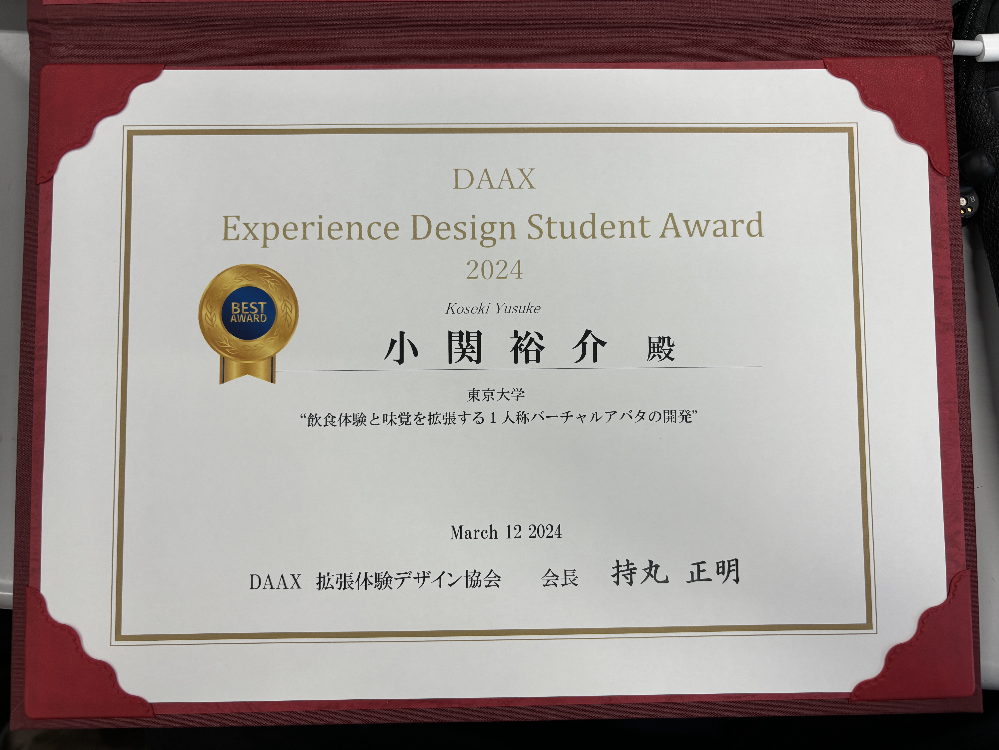
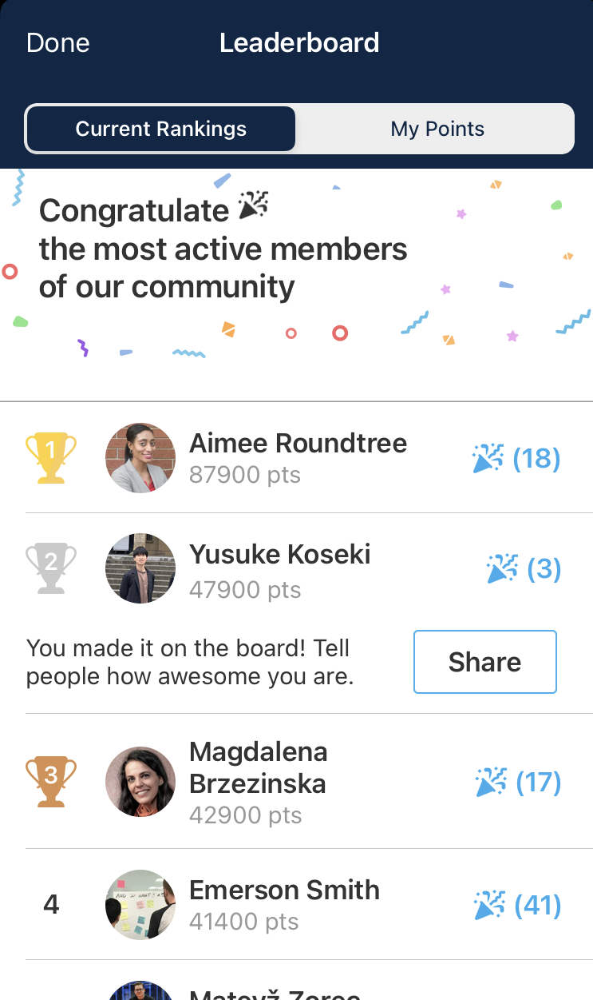

Publication
論文誌(国際)
- Koseki, Y., & Amemiya, T. Being an older person: modulation of walking speed with geriatric
walking motion avatars. Frontiers in Virtual Reality, 2024.
口頭発表(国際)
- Koseki, Y., & Amemiya, T. Modulation of the Walking Speed by Moving Avatars with Age
Stereotype Stimuli. In International Conference on Human-Computer Interaction, 2023.
ポスター発表(国際)
- Koseki, Y., Arikawa, Y., Nakano, K., & Narumi, T. Avatars for Good Drinking: An Exploratory
Study of The Effects of Avatar's Body Shape on Beverage Perception. In SIGGRAPH Asia 2023, 2023.
口頭発表(国内)
- 小関裕介, 中野萌士, 鳴海拓志, 葛岡英明, 雨宮智浩. 対話者アバタの融合身体的ミラーリングが相手の印象に与える影響. IE/IMQ/MVE/AC/CQ 合同研究会, 2024年3月.
- 小関裕介, 雨宮智浩. 並走するバーチャルアバタによる歩行速度変調と老人プライミングの関係. 第27回日本VR学会大会, 2022年9月.
受賞・採択等
- 電子情報通信学会MVE賞, IE/IMQ/MVE/AC/CQ合同研究会, 2024年4月.
- 令和6年度 DAAX Experience Design Student Award, 産総研人間拡張研究センター, 2024年3月.
- 国際卓越大学院プログラム WINGS-GLAFS 採択, 2023年9月.
- Leaderboard Award 2nd, International Conference on Human-Computer Interaction, 2023年7月.
資格
- 応用情報技術者, 情報処理推進機構, 2023年4月.
- JDLA Deep Learning for ENGINEER, 一般社団法人日本ディープラーニング協会, 2022年2月.
その他
- 会議参加報告, 日本バーチャルリアリティ学会学会誌, 2024年3月.
Gallery



